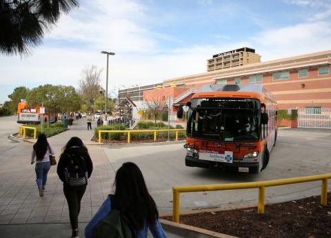

UniverCity Living
Communities are build for people, not cars
walk, bike, choose transit
Did you know that you are healthier when you ride the train? Walking and 2-wheel vehicles provide more intimacy with local businesses, parks and people. Forget looking for a parking space and risk getting ticketed only to backtrack and walk to and from your destination anyway. More time for self-reflection and less road rage and commuter traffic. Reduce emissions without the price tag and hassle of an electric vehicle (EV). Cars offer freedom, but in today's world they are also a trap. Help your community become car-optional, and not car-dependent. Uber ($$$) should be a last resort, not your go-to. Get involved in the policy-making process. Learn about the things that shape your community, like zoning laws and public infrastructure. Call your local, state and national leaders. Attend intragovernmental and intra-agency meetings and demand change. Teach your children TO talk to strangers in public space and make new friends. Learn how current transit may not benefit everyone equally, as public safety policy and privilege play their roles. If you have a car or two, consider selling and "upgrading" for a bike, scooter, walking shoes, and a bus pass -- your wallet will thank you even if Exxon, State Farm, and Jiffy Lube won't. Pass on the parking pass. Reduce the 40+ thousand US deaths per year caused by automobiles. Watch and listen to local street performers. Live your best urban life in college and beyond.
UniverCity Mission
It's our mission to invigorate and educate the young adults entering the world and moving from place to place to do wo with autonomy, their health and the community in mind. This means challenging the car-required mindset in cities, college campuses, and even suburbs where public transportation and safe public infrastructure make choosing other mobility options available and even preferable. In other parts of the world cars are considered expensive luxuries that come with a price much larger than the monetary value, rather than a need. We excitedly proclaim that in American communities this is true as well.
However, this is not true everywhere, and there are downsides to rejecting car culture. Travel between urban centers, safety concerns, low-population density, urban sprawl, negative public opinion of subways and busses, poor lighting at night, ableism, racism, systems that neglect poor people to cater to the tax base who drive luxury cars. These are just some of the obstacles that make UniverCity living a challenge. We also educate on current issues related to transit and pedestrian lifestyles and how you can effect public policy to address these issues.
UniverCity is funded entirely by Christopher Higham, a poor college veteran and urbanist himself.